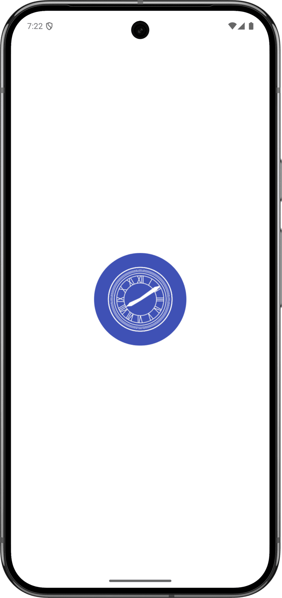

Magic Timer - Mobile Application
Magic timer app that always stops at a fixed sum of minutes, seconds, and milliseconds — surprising and puzzling!
Dart
Flutter
Magic timer app that always stops at a fixed sum of minutes, seconds, and milliseconds — surprising and puzzling!
Magic Timer is a Flutter stopwatch dressed up as a mentalist trick: whenever it is stopped, the displayed minutes, seconds and centiseconds are quietly rewritten so that their sum always equals the same target value — 42 by default. The performer starts and stops the watch at any moment, and the numbers always add up.
The shell around the trick is a faithful, dark-themed imitation of Apple's Clock app: a splash screen fades into a four-tab layout — World Clock, Alarm, Stopwatch and Timer — with only the Stopwatch alive, so nothing looks out of place.
The target and the trick itself can be changed on the fly and are remembered between launches.

Every stop is stored in a lap list with alternating row shading, controls change colour and label like the system app, and a small two-dot indicator lets the performer see at a glance whether the trick is armed — while looking like ordinary interface decoration to everyone else.
A Flutter app that reads the real elapsed time and recomputes the final digits on stop. Preferences are stored on the device, the hardware key is captured at keyboard level, and a native Android channel adapts the system overlay to the navigation style.
Implements the whole trick as a single StatefulWidget: the real Stopwatch/Timer.periodic tick loop, the fixed-sum recalculation and its wrap-around edge cases, the lap list, the hidden volume-key toggle via RawKeyboard, and the splash screen's tween/curve choreography — all with plain dart:async, no external state-management package.
Builds the Clock-style shell with tabs, renders the time with fixed-width digits so they do not jitter, and drives the splash animation.
Persists the two pieces of user-configurable state — the target sum and whether the fixed-sum calculation is enabled — to local key-value storage, loading them back on startup so the performer's setup carries over between sessions.
A native MethodChannel ("navigation_mode_channel") queries the Android side for the active navigation mode at startup, so the app can choose the system UI overlay mode that keeps the stopwatch full-screen regardless of gesture or button navigation.